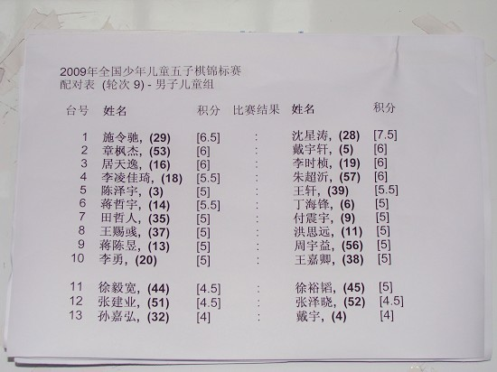
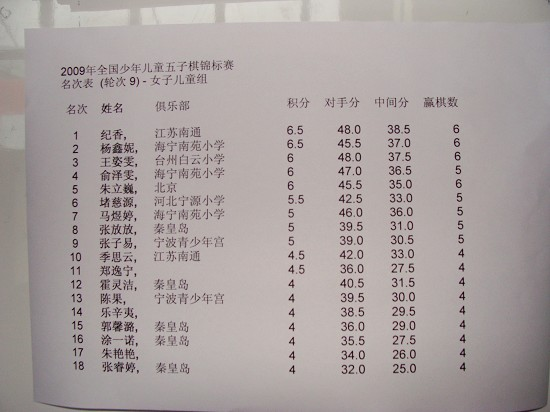

全国少年儿童五子棋比赛第九轮对阵表及八轮后积分
#1 全国少年儿童五子棋比赛第九轮对阵表及八轮后积分作者：有志青年 发表时间：2009-8-10 17:49:59




#2 Re:全国少年儿童五子棋比赛第九轮对阵表及八轮后积分作者：平常心四平 发表时间：2009-8-10 18:48:51
怎么没有少年组的呀#3 Re:全国少年儿童五子棋比赛第九轮对阵表及八轮后积分作者：平常心四平 发表时间：2009-8-10 18:52:33
拜托传上来啊#4 Re:全国少年儿童五子棋比赛第九轮对阵表及八轮后积分作者：自来自去 发表时间：2009-8-10 19:31:45
纪香好棒，呵呵#5 Re:全国少年儿童五子棋比赛第九轮对阵表及八轮后积分作者：雾蒙蒙 发表时间：2009-8-10 20:11:46
 李时珍小朋友。。。
李时珍小朋友。。。